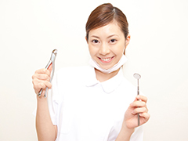
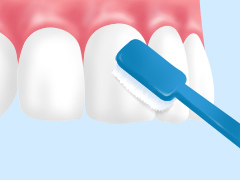
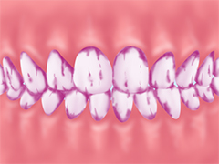
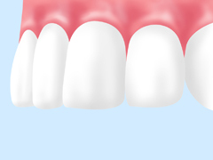
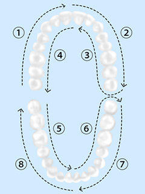
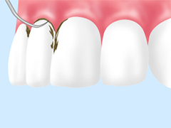
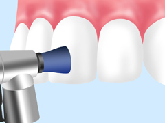
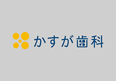
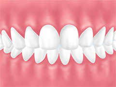

- ホーム
- 予防歯科
いつまでも健康な歯を～予防歯科～
福岡県春日市の歯医者「かすが歯科」は予防歯科に力を入れています。
代表的なお口のトラブルには「虫歯」と「歯周病」がありますが、この2つの病気はいずれも予防可能。歯科で専門的なケアを定期的に受けることで、虫歯や歯周病ができにくい口腔内環境を整え、発症や再発を防ぐことができるのです。
歯科先進国では、この「歯科医院は“治療”でなく“予防”のために通うもの」という考えが当たり前。健康なお口を維持するため、ぜひ日ごろから予防歯科にお越しください。
予防歯科とは？
虫歯や歯周病は自然治癒することがなく、放っておけばどんどん進行してしまいます。虫歯なら歯を削る治療が必要になり、詰め物や被せ物で補っても、患者様の本来の歯を取り戻すことはできません。
これは歯周病も同様で、失われた歯ぐきや顎の骨は再生が非常に困難。治療を重ねればいずれ歯を失う可能性が高まります。そして進行した虫歯・歯周病の治療にはお金も時間も必要。患者様への負担もより大きくなります。
こういったことを避けられるのが予防歯科です。
虫歯・歯周病はそのメカニズムが解明されています。毎日の正しいセルフケアと歯科医院でのプロフェッショナルケアによって発症・再発を防げるのです。
残念ながらセルフケアだけでは、どうしてもお口には汚れが残ってしまいます。その汚れを徹底的に取り除くのが、予防歯科の役割。専門的なケアのご提供によって、患者様の健康的な口腔内環境維持のお手伝いをします。
当院の予防歯科における取り組み
取り組み1 担当衛生士制による細やかなケア

患者様一人ひとりに細やかなケアをするため、当院では担当衛生士制を導入。毎回決まった歯科衛生士がプロフェッショナルケアを担当し、患者様が安心して通い続けられる環境を整えるとともに、お口のわずかな変化も見逃しません。
また担当衛生士と歯科医師が密に連携し、患者様により効果的な予防歯科をご提供します。
取り組み2 適切なセルフケアのためのアドバイス

「毎日ちゃんと磨いている“つもり”」になっていませんか？ 歯科予防の基本は毎日のご自宅でのセルフケアです。当院では患者様がご自信が効果的なセルフケアを行えるよう、プロの視点からお手伝いします。
ブラッシングの方法・タイミングだけでなく、必要に応じて食事のとり方などの生活習慣改善についてもお話しします。わからないことがあれば、何でもお気軽におたずねください。
取り組み3 豊富な予防ケアメニューのご用意
検査メニュー
予防歯科は、患者様の現在のお口の中の状態を知ることからはじまります。当院では患者様一人ひとり異なるお口の傾向を調べるため、以下のような検査を行います。
プラーク（歯垢）の染め出し

食紅と同じ成分でつくられた体に安全な染め出し液を歯に塗り、どこにプラークが残っているかをチェックします。みがき残しやすい部分を確認し、ブラッシング指導にも活かしていきます。
定期検診

虫歯や歯周病は初期に自覚症状がなく、ご自身ではなかなか進行に気づけません。定期的にご来院いただき、歯科医師の目でチェックを受けることが必要です。
定期的に専門的な予防ケアとチェックを受けることで、初期の虫歯・歯周病も見逃さずに早期の対処が可能になります。
予防メニュー
ブラッシング指導

まずは患者様の日ごろのブラッシング方法を確認させていただきます。予防の基本となるセルフケアを正しく行えているかどうかをチェックし、その後歯並びやお口の環境などをふまえ、患者様一人ひとりに合った効果的なブラッシング方法を指導します。
スケーリング

専用の器具を使って、歯にこびりついた歯石を除去する処置です。歯の表面だけでなく歯ぐきの内側までしっかり確認し、残らず歯石を取り除きます。
PMTC

PMTCとは、歯科医院で歯科の専門家が専用の器械を使って行う歯のクリーニングです。毎日のブラッシングだけではどうしても落としきれない汚れを除去します。痛みのない処置ですので、ご安心ください。
フッ素塗布

歯質を強化する効果があるフッ素を歯の表面に塗布し、虫歯予防につなげます。大人・子どもを問わず、定期的に行うことが効果的です。またごく初期の虫歯であれば、フッ素塗布によって虫歯が治癒するケースも。
シーラント
虫歯になりやすい奥歯の深い溝をレジン（歯科用プラスチック）で埋めてしまい、虫歯を予防します。みがき残しが発生しやすいお子様向けの処置です。
3DS
薬剤を歯に作用させて虫歯予防を図る新しい処置です。虫歯菌を除去する効果がある抗菌剤をマウストレーに入れて装着し、より効果的な予防歯科を実現します。
咬み合わせチェック

咬み合わせが乱れていると、汚れが溜まりやすかったり、一部の歯に負担がかかったりして虫歯・歯周病になりやすくなります。定期的にチェックし、問題があれば適切な対応をします。
定期的なメンテナンス
従来歯医者は「歯が痛い・しみる」といった症状が出てから治療を受ける場所と思われてきました。しかしそれではごく初期の虫歯や知らないうちに進行する歯周病を見逃してしまい、患者様の大切な歯を守ることができません。そこで近年では、虫歯や歯周病にならないために専門的なメンテナンスを受ける場所であると見直されてきたのです。
定期的に歯科医師によるチェックと専門的なメンテナンスを受けていれば、虫歯・歯周病の発症・再発を防ぐことができます。その結果、年齢を重ねてからも自分の歯で食事や会話を楽しめるのです。
「歯医者はお口の健康を維持するために行く場所」だと意識を変え、定期検診を習慣づけましょう。